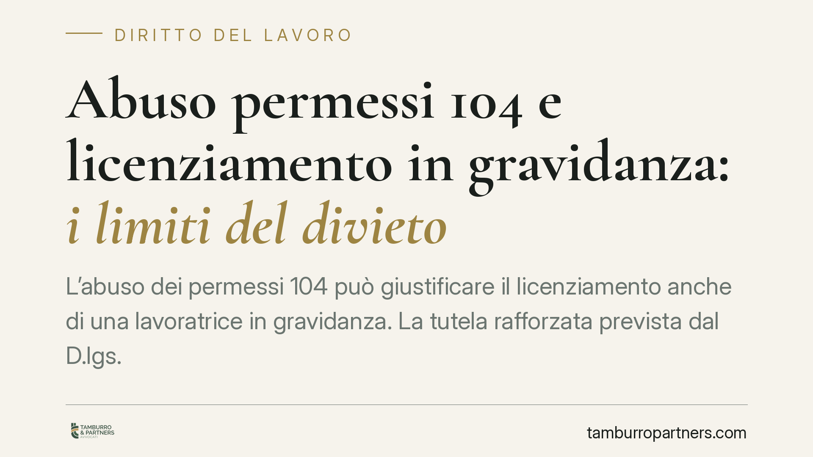

Abuso permessi 104 e licenziamento in gravidanza: i limiti del divieto
L'abuso dei permessi 104 può giustificare il licenziamento anche di una lavoratrice in gravidanza. La tutela rafforzata prevista dal D.lgs. 151/2001 non è assoluta: cede solo di fronte a una colpa grave, accertata con valutazione autonoma e particolarmente rigorosa. Analizziamo il quadro normativo, il principio applicabile e le cautele che datore e lavoratrice dovrebbero adottare.

Abuso permessi 104: quando cede il divieto di licenziamento
L'abuso permessi 104 è una delle poche condotte in grado di incrinare la tutela rafforzata di cui gode la lavoratrice in gravidanza. La regola generale è nota: durante la gestazione il licenziamento è vietato. Ma il divieto non è privo di eccezioni, e il loro perimetro è oggetto di un orientamento giurisprudenziale ormai consolidato in materia di abuso del diritto e permessi assistenziali.
Prima di entrare nel merito, una precisazione di metodo. La materia è delicata e si fonda su principi elaborati da una pluralità di pronunce di legittimità (tra cui, in tema di abuso dei permessi ex L. 104/1992, Cass. n. 17968/2016 e Cass. n. 4984/2014, oltre al filone successivo). Riferiamo quindi il principio come orientamento consolidato, non come singola decisione.
Inquadramento normativo
Il divieto di licenziamento della lavoratrice madre è disciplinato dall'art. 54 del D.lgs. 151/2001 (Testo unico maternità e paternità). La tutela opera dall'inizio del periodo di gestazione – con efficacia retroattiva rispetto al momento in cui lo stato risulta accertato – fino al compimento di un anno di età del bambino, ed è collegata ai periodi di interdizione previsti dalla legge.
Lo stesso art. 54, al comma 3, individua le ipotesi in cui il divieto non trova applicazione. Tra queste, la lettera a) richiama la colpa grave da parte della lavoratrice, costituente giusta causa per la risoluzione del rapporto di lavoro. È questo il varco normativo attraverso cui una condotta abusiva può legittimare il recesso anche durante il periodo protetto.
Sul fronte dei permessi, l'art. 33 della L. 104/1992 riconosce il diritto a giornate di permesso retribuito per l'assistenza al familiare disabile. L'utilizzo di tali permessi per finalità diverse dall'assistenza costituisce abuso del diritto e, secondo la giurisprudenza di legittimità, può integrare una grave violazione dei doveri di correttezza e buona fede, incidendo sul vincolo fiduciario e sul patrimonio del datore (che anticipa la retribuzione poi rimborsata dall'INPS).
Il principio: una valutazione autonoma
Il punto centrale è che la "colpa grave" richiesta dall'art. 54 non coincide automaticamente con la giusta causa ordinaria di cui all'art. 2119 c.c.
Si tratta di una colpa grave rafforzata, che impone al giudice una valutazione autonoma e più severa rispetto a quella svolta per un licenziamento disciplinare comune. In concreto: non basta accertare che la condotta sarebbe stata sufficiente a giustificare il recesso di un lavoratore qualsiasi. Occorre verificare che quella stessa condotta, tenuto conto delle condizioni psicofisiche proprie della gestazione, raggiunga una soglia di gravità tale da superare la tutela rafforzata.
La gravidanza, in altri termini, non rende la lavoratrice immune dalle conseguenze di un abuso, ma innalza il livello di scrutinio richiesto per sanzionarlo con il licenziamento.
Implicazioni pratiche
Per il datore di lavoro. La contestazione deve essere costruita con particolare solidità. Non è sufficiente un sospetto o un dato parziale: serve la prova documentale dell'utilizzo dei permessi per finalità estranee all'assistenza. La motivazione del licenziamento deve dare conto della gravità specifica della condotta, non limitandosi a replicare gli schemi del licenziamento disciplinare ordinario.
Per la lavoratrice. La condizione di gravidanza offre una tutela forte ma non incondizionata. Un uso dei permessi 104 non conforme alla finalità assistenziale espone comunque al rischio di recesso, che in questi casi la giurisprudenza tende a confermare quando l'abuso è provato in modo rigoroso.
Resta fermo il limite sui controlli: l'eventuale attività investigativa deve rispettare i confini fissati dallo Statuto dei lavoratori (artt. 2 e 3 della L. 300/1970) e non può estendersi al controllo dell'adempimento della prestazione lavorativa in senso proprio.
Cosa fare in concreto
- Datore: raccogli prove certe e documentate dell'uso improprio dei permessi, evitando controlli che travalichino i limiti dello Statuto dei lavoratori.
- Datore: motiva il licenziamento ancorandolo espressamente alla colpa grave ex art. 54, co. 3, lett. a), con valutazione specifica della gravità.
- Lavoratrice: conserva documentazione che attesti l'effettiva destinazione dei permessi all'assistenza del familiare.
- Lavoratrice: se ricevi una contestazione, rispondi nei termini con memorie difensive dettagliate prima di ogni decisione.
- Entrambi: valutate un confronto legale preventivo prima di formalizzare il recesso o impugnarlo.
---
Contributo informativo a cura di Tamburro & Partners – Avv. Giuseppe Tamburro. Non costituisce parere legale.
Ogni storia di lavoro ha i suoi tempi.
Se gestisci HR e vuoi un confronto su contenzioso, ispezioni o licenziamenti, scrivi allo studio. Ti rispondiamo entro un giorno lavorativo.